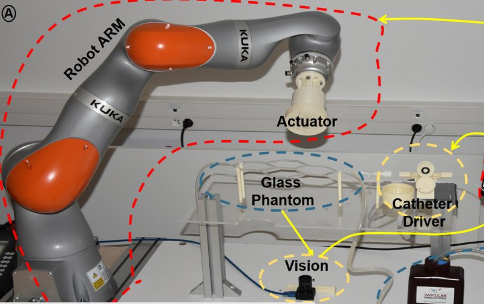

Magnetic navigation · belharet_elfakir2022
PRISME platforms
Magnetic catheter navigation platforms of the Belharet lab (8-coil EMA with haptic and VR teleoperation; KUKA-held permanent magnet with motorized catheter driver)

1 / 4


- Family
- Magnetic navigation (magnetic-navigation)
- Devices
- own magnetic catheters: LDPE shaft with 3 NdFeB magnets (1 mm x 3 mm) at the tip (elfakir2022_towards Sec. II-B); 1 mm catheter with 3 magnets (1 x 3 mm, 8 mm spacing) in LDPE tube (elfakir2022_magnetic Table I, Fig. 6B)
- Degrees of freedom
- EMA version: 2 bending angles + 1 insertion from the haptic device (elfakir2022_towards Sec. V); arm version: 7-DoF arm + motorized insertion (elfakir2022_magnetic Sec. IV-C)
- Push
- Magnetic
- Twist
- Other
- Tested up to
- Phantom
- Sim-to-real
- None found — No simulation-trained controller found for this robot.
Testing
- Highest level
- Phantom
- What was tested
- glass phantom with 2 mm arteries, 20 cm path and four successive bifurcations (45 and 90 deg): three navigations, all reached the target (elfakir2022_magnetic Sec. IV-C, Fig. 8); free-space and glass-vessel deflection under the EMA (elfakir2022_towards Figs. 6-8)
- Key numbers
- max tip deflection 155 deg (elfakir2022_magnetic Sec. IV-B); first navigation 35 s including actuator moves (Sec. IV-C); EMA current-to-angle polynomial model of degree 2 with error 0.39 (elfakir2022_towards Sec. IV-A); magnet 70 x 70 mm, Br 1.42 T (elfakir2022_magnetic Sec. II)
Mechanism
- Push (translation)
- magnetic (tip steering); linear-stage push of the proximal end (PI XYZ stage, elfakir2022_towards Sec. II-A; motorized catheter control system, elfakir2022_magnetic Sec. IV-C)
- Twist (rotation)
- field of 8 fixed electromagnets (EMA) or pose of a permanent magnet on a 7-DoF arm (KUKA)
- Device range
- catheter OD 1 mm (elfakir2022_magnetic Sec. IV-A)
- Target anatomy
- complex vascular networks and small arteries (2 mm), applications named: brain tumours, stenosis, cardiac ablation, renal artery occlusion (elfakir2022_magnetic Sec. I, Fig. 1)
Sensing and interface
- Force sensing
- none on the catheter; haptic forces come from virtual contact in the VR model (Ks = 1000 N/m, bm = 30 Ns/m, elfakir2022_towards Sec. III-D)
- Leader and haptics
- Omega.6 (Force Dimension) with force feedback from simulated contacts (elfakir2022_towards Sec. II-A, III-D)
- Imaging
- cameras only (stereo vision; CCD camera tracking)
- Sterility
- N.R.
Size
- Footprint (mm)
- N.R.
- Mass (kg)
- N.R.
Simulation
- Simulation model
- Simscape (MATLAB) multibody model of the catheter with a spatial contact-force model, run alongside the real catheter as VR (elfakir2022_towards Sec. III); Euler-Bernoulli multi-element deflection model for catheter design (elfakir2022_magnetic Sec. II)
- Sim-trained controller
- none found (the virtual model drives haptic feedback while the real catheter runs open loop; no simulation-trained controller, elfakir2022_towards Sec. IV)
Versions
- Lineage
- VHMM: 8-electromagnet EMA of the lab + PI XYZ positioner pushing the catheter + Omega.6 haptic master + Simscape VR (elfakir2022_towards, AIM 2022); KUKA LBR iiwa R14 holding a 70 x 70 mm NdFeB magnet + motorized catheter driver + glass phantom (elfakir2022_magnetic, ICARM 2022); PhD thesis 2024 (HAL tel-04914777, not opened)
Sources
- Towards a Robust Steerability Magnetic Catheter with Haptic Force Feedback and Virtual Reality · 2022 IEEE/ASME International Conference on Advanced Intelligent Mechatronics (AIM), 2022 · doi:10.1109/aim52237.2022.9863252 [elfakir2022_towards]
- Magnetic Catheter Optimized for Navigation in a Complex Vascular Network · 2022 International Conference on Advanced Robotics and Mechatronics (ICARM), 2022 · doi:10.1109/icarm54641.2022.9959369 [elfakir2022_magnetic]
- The Design of Endovascular Robots for Cardiac Interventions: A Survey · Journal of Field Robotics, 2024 · doi:10.1002/rob.22480 [alekseeva2025_design]
Notes
- Notes
- Family: magnetic. alekseeva2025_design Table 14 row 9 lists both 2022 papers as one system; the two papers use different field sources, kept as versions of one row. Thesis PDF behind an Anubis challenge on HAL: manual list.
This record
- Read level
- full — full (elfakir2022_towards, elfakir2022_magnetic)
- Picture
- elfakir2022_magnetic Fig. 6(A) ↗ — licence: publisher copyright; grade C
- Picture changes
- native extract from elfakir2022_complex-network_ICARM.pdf p. 5; cropped to the arm, magnet, catheter driver and phantom (control panel and inset B removed); none upscaled
- Found by
- actuated-tip: Search of actuated-tip and magnetic devices.
- Data
- JSON · YAML:
records/robots/belharet_elfakir2022.yaml - Correction
- Suggest a correction [repository not created yet]